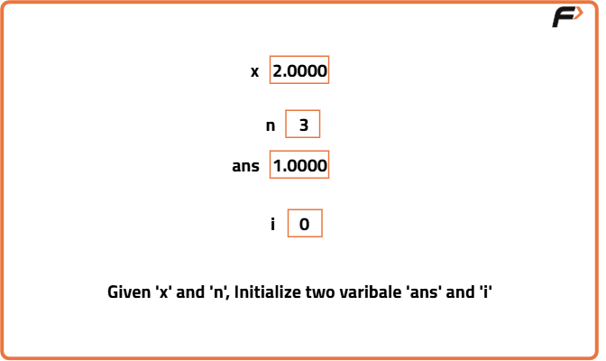
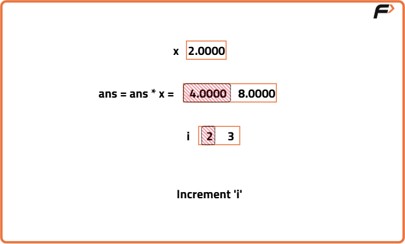
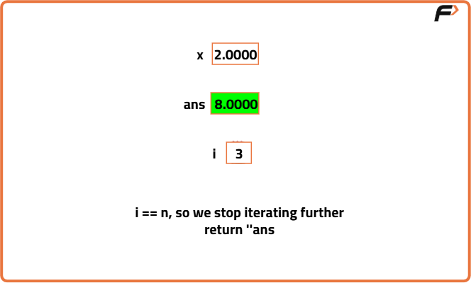
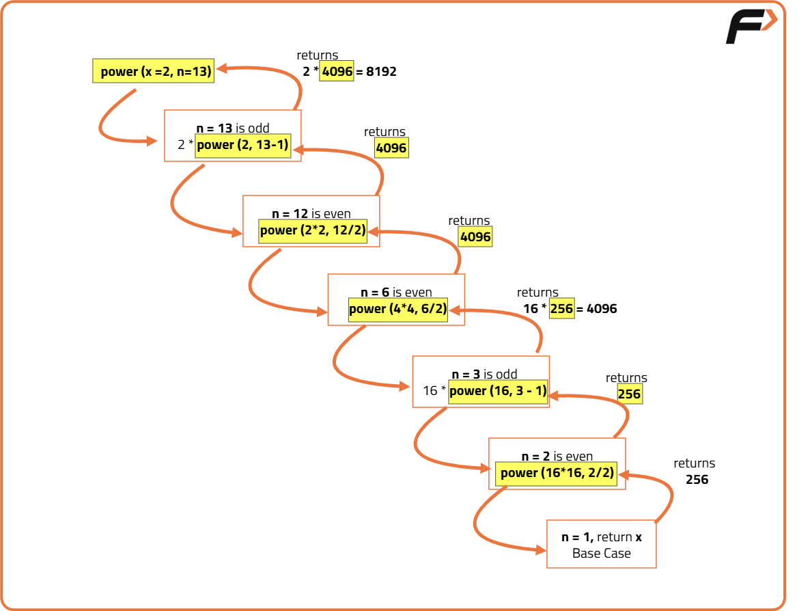

Implement Pow(x,n) | X raised to the power N
Problem Statement: Implement the power function pow(x, n) , which calculates the x raised to n i.e. xn.
Examples
Example 1: Input: x = 2.0000, n = 10 Output: 1024.0000 Explanation: The answer is calculated as 2^10, which equals 1024. Example 2: Input: x = 2.0000, n = -2 Output: 0.2500 Explanation: The answer is calculated as 2^(-2), which is equal to 1/4 = 0.25.
Disclaimer: Here is the practice link to help you assess your knowledge better. It's highly recommend trying to solve it before looking at the solution.
Brute Force
Algorithm
- Initialize the result variable,
ans, to 1. This serves as the base case where any number raised to the power of 0 is 1. - Check if the exponent
nis less than 0:- If true, invert
xby settingx = 1/xand makenpositive by settingn = -n. This transformation allows handling of negative exponents.
- If true, invert
- Use a loop to iterate from 0 to
n(converted to an integer). In each iteration, multiplyansbyx. This effectively computesxraised to the power ofn. - Return the result stored in
ans, which now contains the value ofx^n.



Code
#include <bits/stdc++.h>
using namespace std;
class Solution {
public:
double myPow(double x, int n) {
// Base case: any number to the power of 0 is 1
if (n == 0 || x == 1.0) return 1;
long long temp = n; // to avoid integer overflow
// Handle negative exponents
if (n < 0) {
x = 1 / x;
temp = -1*1LL*n;
}
double ans = 1;
for (long long i = 0; i < temp; i++) {
// Multiply ans by x for n times
ans *= x;
}
return ans;
}
};
int main() {
Solution sol;
// Output: 1024.0000
printf("%.4f\n", sol.myPow(2.0000, 10));
// Output: 0.2500
printf("%.4f\n", sol.myPow(2.0000, -2));
return 0;
}Complexity Analysis
Time Complexity: O(n), where n is the absolute value of the exponent. This is because we multiply the base x, n times.
Space Complexity: O(1), as we are using a constant amount of space for the variables used in the computation.
Optimal Approach
Algorithm
- Define a helper function that handles the recursive calculation of the power.
- Base Case 1: If the exponent
nis 0, return 1 because any number raised to the power of 0 is 1. - Base Case 2: If the exponent
nis 1, return the basex, since any number raised to the power of 1 is itself. - If the exponent
nis even: - If true, recursively calculate the power by squaring the base and halving the exponent:
power(x, n) = power(x * x, n / 2)
- If the exponent
nis odd: - If true, recursively calculate the power by multiplying the base with the result of the power function for
n - 1:power(x, n) = x * power(x, n - 1)
- Handle negative exponents:
- If the exponent is negative, calculate the power for the positive exponent and take the reciprocal of the result.
- Finally, combine these steps in a main function that checks if the exponent is negative and calls the helper function accordingly.

Code
#include<bits/stdc++.h>
using namespace std;
// Class definition for the solution
class Solution {
private:
// Function to calculate power
// of 'x' raised to 'n'
double power(double x, long n) {
// Base case: anything raised to 0 is 1
if (n == 0) return 1.0;
// Base case: anything raised to 1 is itself
if (n == 1) return x;
// If 'n' is even
if (n % 2 == 0) {
// Recursive call: x * x, n / 2
return power(x * x, n / 2);
}
// If 'n' is odd
// Recursive call: x * power(x, n-1)
return x * power(x, n - 1);
}
public:
// Function to calculate x raised to n
double myPow(double x, int n) {
// Store the value of n in a separate variable
int num = n;
// If n is negative
if (num < 0) {
// Calculate the power of -n and take reciprocal
return (1.0 / power(x, -1 * num));
}
// If n is non-negative
return power(x, num);
}
};
int main() {
Solution sol;
double x = 2.0;
int n = 10;
// Calculate x raised to n
double result = sol.myPow(x, n);
// Print the result
std::cout << x << "^" << n << " = " << result << std::endl;
return 0;
}Complexity Analysis
Time Complexity: O(log n), where n is the absolute value of the exponent. This is because we reduce the problem size by half in each recursive call when n is even.
Space Complexity: O(log n), due to the recursive call stack. In the worst case, the depth of the recursion can go up to log(n) when n is even.